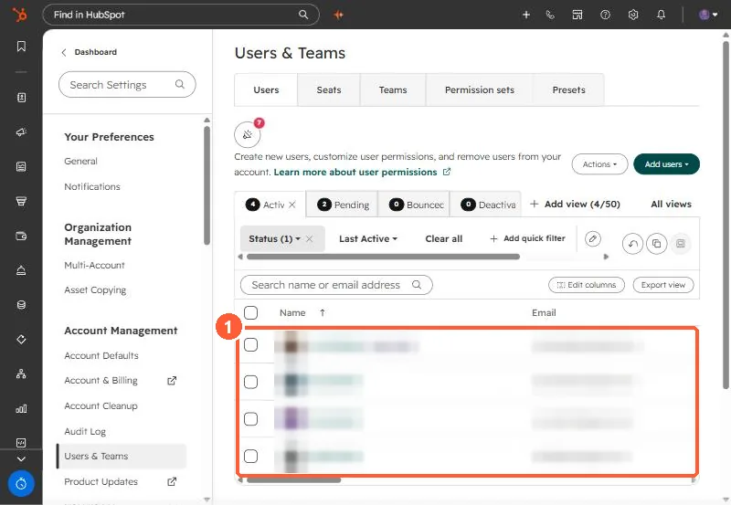
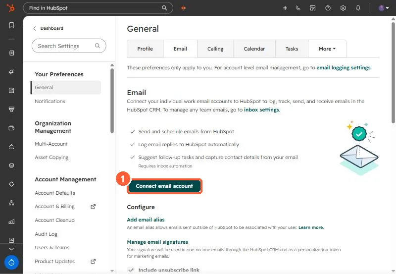
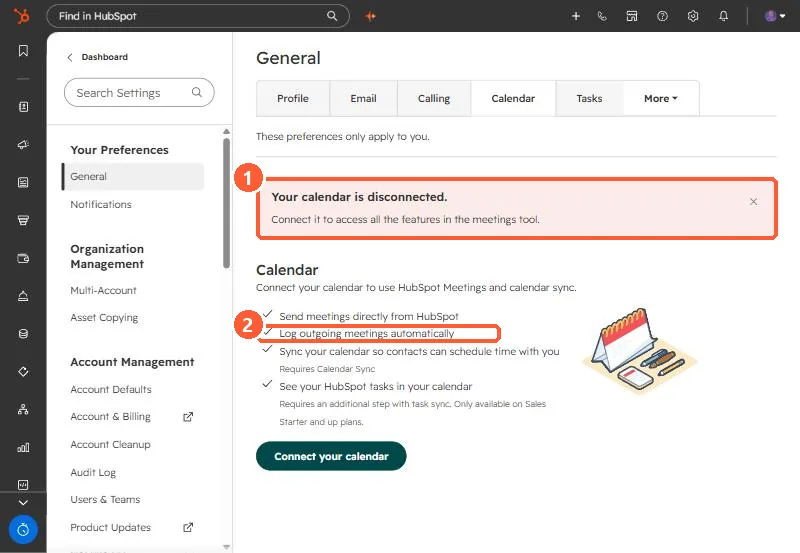

Short answer
Before you troubleshoot an integration, check each user. In an agency portal I compared every user's external calendar meetings with the meetings in HubSpot and their connection status. Several people had email off, a few had nothing connected at all, and their meetings were simply never logged. Each user connects email under Settings, General, Email and calendar under Calendar, and HubSpot says connecting a calendar needs personal email access turned on. Fix those first, then look at the cases where everything is on and it still fails.
1. Start from the user list
Open Users & Teams and list everyone who meets clients. Names are blurred below.


2. Email
Each user goes to Settings, General, Email. If it shows Connect email account, nothing is connected.


3. Calendar
Same page, Calendar tab. HubSpot lists "Log outgoing meetings automatically" among the things a connected calendar does.


4. What the audit turned up
- Several users had email disconnected, and some had neither email nor calendar connected.
- After people connected, newly scheduled meetings logged. Old meetings were not backfilled.
- One user had email, calendar, and sync all on and still was not logging. That case is in recurring meetings not logging.
A weekly check comparing calendars to logged meetings catches this before a client asks why their call history is empty.